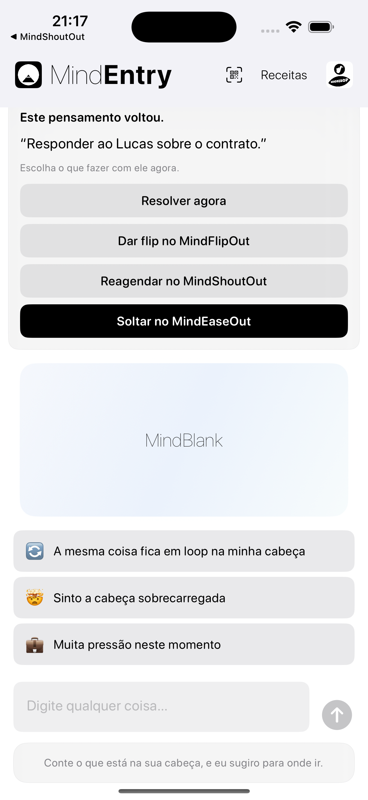
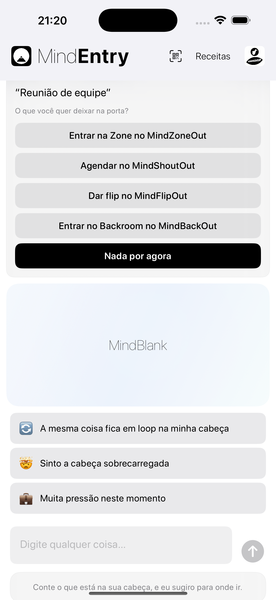

Um prompt silencioso antes que o atrito mental tome forma.
MindPreCog é a camada contextual do MINDBEBOP.
Ele percebe momentos significativos — quando um pensamento retorna, continua retornando, o dia começa, a hora de dormir se aproxima, a semana termina, uma reunião está prestes a começar ou um contexto exigente está se aproximando — e oferece o caminho estrutural mais adequado.
Em vez de esperar que você perceba que precisa de ajuda, o MindPreCog apresenta suavemente a ferramenta certa no momento certo.
Sem análise. Sem interpretação. Sem diagnóstico. Apenas um convite oportuno para reduzir o atrito mental antes que ele aumente.
A maioria dos aplicativos espera que você peça ajuda. O MindPreCog oferece estrutura antes mesmo de você pensar em pedir.
Esses momentos se tornam oportunidades silenciosas para responder de forma diferente.
Prompts contextuais, não leitura da mente.
O MindPreCog não analisa seus pensamentos.
Ele responde a sinais simples, como:
Quando um desses momentos acontece, o MindEntry pode ser aberto e oferecer o próximo passo mais relevante.
Isso pode significar registrar um pensamento, invertê-lo, reagendá-lo, entrar no Backroom, entrar em Zone, liberá-lo, revisar o que continuou retornando ou simplesmente não fazer nada.
Pela manhã, o MindEntry pode perguntar:
O que merece sua atenção hoje?
Antes de dormir, o MindEntry pode perguntar:
Há algo que você queira deixar para amanhã?
Uma vez por semana, o MindEntry pode perguntar:
O que tem continuado a voltar ultimamente?
Antes de uma reunião, o MindEntry pode perguntar:
Há algo que você queira deixar na porta?
Ou, quando um lembrete retorna várias vezes:
Este pensamento continua voltando.
Você pode escolher MindShoutOut, MindFlipOut, MindZoneOut, MindBackOut ou liberar o pensamento.
Uma pequena quantidade de atrito mental é reduzida antes que tenha a chance de crescer.
Uma visão silenciosa do que continuou pedindo sua atenção.
O Weekly MindPreCog oferece uma visão local e simples dos últimos 7 dias.
Ele pode mostrar contagens como pensamentos que retornaram, retornos repetidos, prompts exibidos e respostas estruturais utilizadas.
Ele não mostra o conteúdo dos pensamentos, títulos de calendário, rótulos emocionais, pontuações ou interpretações.
Apenas uma visão silenciosa do que continuou retornando.
O MindPreCog simplesmente percebe momentos significativos e oferece estrutura quando isso pode ser útil.


Os prompts do MindPreCog são exibidos dentro do MindEntry.
Com o tempo, o MindPreCog pode se expandir para incluir prompts contextuais adicionais.
A maioria das ferramentas mentais é reativa.
Você percebe um problema e só então decide o que fazer.
O MindPreCog encurta esse intervalo.
Ele oferece uma opção estrutural pouco antes de o atrito mental ter a chance de crescer, além de uma visão semanal silenciosa do que continuou retornando.
O MindPreCog não tenta compreender sua mente. Ele simplesmente chega um pouco mais cedo — e, de vez em quando, ajuda você a perceber o que continuou retornando.
Copyright © 2026 MINDBEBOP — All rights reserved.